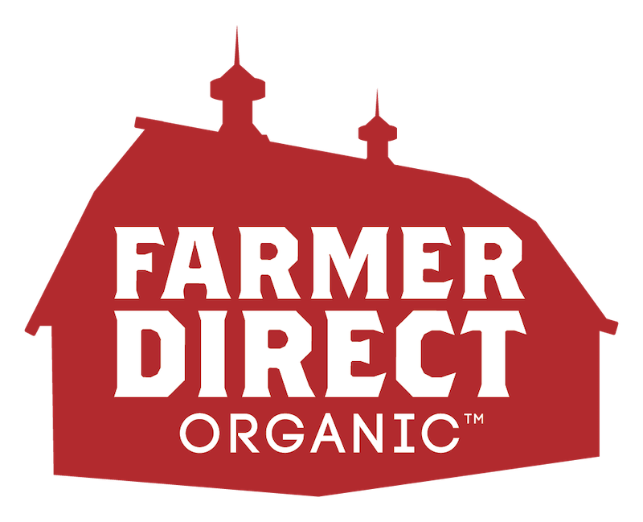

KeHE Vendor ESN 2220136 · Effective May 17, 2026
| Item | UPC |
|---|---|
| ROC + Organic French Green Lentils | 8 81964 00004 2 |
| ROC + Organic Split Red Lentils | 8 81964 00021 9 |
| ROC + Organic Quick Rolled Oats | 8 81964 00008 0 |
| ROC + Organic Regular Rolled Oats | 8 81964 00084 4 |
| ROC + Organic Old Fashioned Thick Rolled Oats | 8 81964 00090 5 |
| ROC + Organic Steel Cut Oats | 8 81964 00091 2 |
| Item | UPC |
|---|---|
| Organic Large Green Lentils | 8 81964 00003 5 |
| Organic Black Lentils | 8 81964 00005 9 |
| Organic Whole Red Lentils | 8 81964 00026 4 |
| Organic Pinto Beans | 8 81964 00010 3 |
| Organic Black Beans | 8 81964 00015 8 |
| Organic Chickpeas | 8 81964 00024 0 |
Independent lab testing shows 1 in 15 organic-certified products contain as much glyphosate as conventional products. FDO is independently tested to ensure pesticide levels are at least 90% lower than USDA organic limits and 99% lower than EPA standards. When your buyers ask "Is it really clean?" — FDO is the only brand that can prove it.
FDO is not owned by a corporation, a private equity fund, or a holding company. It is owned by the farmers who grow the grain. Fair prices for farmers. Uncompromising quality for consumers. A story that sells itself at the shelf.
Every bag of FDO product is traceable back to the exact family farm and harvest year. No other brand in the bulk category offers this level of transparency.
FDO is the world's largest supplier of Regenerative Organic Certified grains. Six of twelve SKUs carry ROC certification. Retailers who stock ROC now will own the premium position as the category grows.
Farmer Direct Organic was the fastest selling independent brand launch in Whole Foods Market history. 2X expected sales rate.
Order through KeHE Distributors
Vendor ESN 2220136
Contact: maryjo@farmerdirectorganic.com